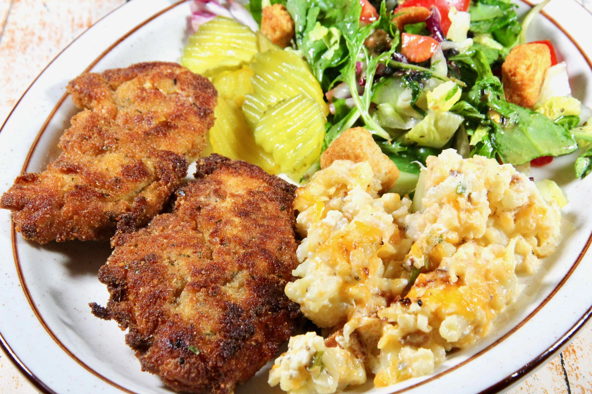

Copycat Honey-Mustard Chicken Tenders

Description
This pan-fried honey-mustard chicken tastes like Chick-fil-A®!
Ingredients
- 2 large eggs
- 3 tablespoons honey mustard
- 1 pinch ground black pepper
- 1 cup all-purpose flour
- 1 tablespoon chicken seasoning blend
- 2 teaspoons cayenne pepper, or to taste
- 2 teaspoons crushed red pepper flakes
- 2 teaspoons seasoning salt
- salt to taste
- 1 cup plain bread crumbs
- 2 teaspoons garlic salt
- 8 ounces chicken tenders, patted dry
- ½ cup peanut oil
Steps
- Mix eggs, honey mustard, and pepper together in a bowl. Mix flour, chicken seasoning, cayenne, red pepper
flakes, seasoning salt, and salt together in a second bowl. Mix bread crumbs and garlic salt together in a
third bowl.
- Dredge chicken tenders in the egg-honey mixture, then in the flour mixture, then back in the egg-honey
mixture, and finally in the breading mixture. You want a medium coating on each tender.
- Heat oil in a pan over medium-high heat. Fry tenders in the hot oil until breading is dark and crispy and
chicken is no longer pink in the center and the juices run clear, about 10 minutes per side.
Back to recipe index